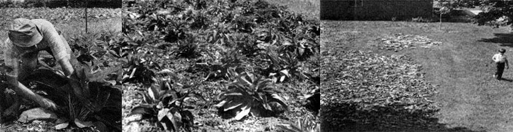
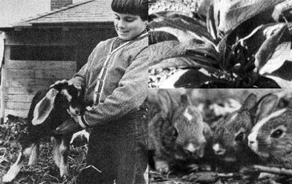

Four years ago-mostly from curiosity, because we'd heard so much about the plant's virtues-we set aside a small rectangular spot on our acre for a bed of 30 comfrey cuttings. They grew like mad. We harvested leaves all summer, and found the new crop so useful that, at the end of the season, we ordered 150 additional roots and expanded our little patch to a plantation of 200.
In case you're not familiar with comfrey, it's a member of the borage family . . . a strong-growing perennial with somewhat hairy leaves 12 to 18 inches long, rising on short stems from a central crown. The flower is a pretty blue bell, fading to pink. We don't wait to see the blossoms, however, because the foliage is at its best if cut before blooming time. The plant reaches a height of over two feet and spreads to more than a yard across, but-since comfrey doesn't throw out creeping roots and hardly ever sets seed-it's remarkably non-invasive for such a sturdy being.
And what's the stuff good for? Let me put it this way: If you're a gardener, you probably raise many plants for special purposes . . . mint-say-for tea, perhaps clover for animal feed, spinach for salad, nettle to liven up the compost, aloe or herbs for healing. Well, comfrey can do it all! We've found at least six uses for it on our homestead, and here they are.
COMFREY IS A VEGETABLE
. . . and possibly a better one than many we plant from seed each year. It's rich in calcium, potassium, phosphorus and vitamins A and C. And-since the protein content of those big leaves runs a very high 21 to 33%-you can count on this plant as an alternative to soybeans if you're trying to feed yourself on the low end of the food chain.
You can stew comfrey briefly in a little water, as you would spinach . . . or-better yet-combine it with other greens, wild and tame, and saute the mixture lightly in oil with onions and peppers. Home-grown sweet potatoes go very well with this dish.
I also like to snip the young leaves into fine pieces and toss them in a salad. Friends of ours make a drinkable lunch by whumping up comfrey leaves, unsweetened pineapple juice, lemon and honey in their blender.
COMFREY IS A TEA
. . . one that will feed your body rather than sloshing out the water-soluble vitamins as regular tea (I hate to say it!) does. We like it best mixed half and half with mint leaves and steeped about five minutes in an enamel kettle. It's a comforting drink, just the thing after an afternoon of stretching fencing in a raw wind, a night of playing midwife to goats or pigs or a day of making snow caves and snow people with the children. Sweeten it with honey and let the youngsters have some too!
To prepare our year's supply of comfrey tea we cut the younger, inner leaves from the crown of the plant and dry them on an old window screen in a hot, airy room . . . away from the sun to preserve their nutritive value. (If you must spread the foliage in direct sunlight, go ahead . . . the beverage will still be far better than any you can buy.)
Comfrey has a high moisture content and dries more slowly than some of the herbs you may be used to working with. Just give it a little extra time. Make sure the leaves are crumbly before you store them, though, since any remaining dampness will cause mold. Then pack the foliage into jars and close the containers tightly.
COMFREY IS A HEALING HERB
Comfrey has long been used as a cure by Gypsies and peasant peoples, and has an ancient reputation as a mender of broken bones. In her marvelous book Herbal Healing for Farm and Stable, Juliette de Bairacli also recommends it for uterine and other internal hemorrhages and for the healing of wounds. British Gypsies, she writes, feed the roots to their animals as a spring tonic. ( See also Modern Encyclopedia of Herbs by Joseph A Kadans for a detailed list of medicinal uses.-MOTHER.)
The effectiveness of this valuable plant can now be accounted for, and therefore more widely accepted. (Funny how pinning a name on the curative property makes it possible for us to acknowledge it!) Anyway, comfrey contains allantoin, a substance known to aid granulation and cell formation . . . which is what the healing process is all about.
Here on our acre, we follow Mrs. Levy's advice and treat both people and animal hurts with comfrey. Generally we use an infusion (strong tea) of fresh or dried leaves, either to soak a part such as a sore finger or to dab on a cut with cotton. A similar brew may be drunk as medicine. Crushed foliage can be applied externally, or a raw leaf rubbed on skin lesions such as rashes and poison ivy blisters. (Scratch and heal in one operation!)
The herb is also used in poultices to help heal swellings, inflammations, cuts and sores. To make such a dressing, let the leaves mush up in hot water, squeeze out the excess liquid and wrap several handfuls of the hot, softened foliage in a clean cloth. Apply the pad to the affected part-comfortably hot, but not scalding-and cover the area with a thick folded towel to keep the heat in. The moist warmth enhances the healing effect of the allantoin.
Poulticing is a warm, comforting treatment, and making one is a caring act . . . something you can actually do for a person. After all, that too counts in the healing process.
We've seen comfrey work some surprising cures in the time we've used it. Two years ago a woman came to us for a plant to help heal a gash in her daughter's leg that hadn't responded to conventional medical treatment. The doctor was amazed, she told us later, at the progress she had achieved by regular applications of the herb. When I saw the child, a healthy line of new skin was filling in the wound and prospects of complete recovery looked good.
Animal wisdom also taught us something about comfrey's powers. Year before last, our goat Sonya miscarried with three kids a month early when Annie-goat butted her against the wall. For several days Sonya felt absolutely rotten . . . you could tell. She had more bleeding than after a normal delivery, lay on the floor looking woebegone and refused grain and hay, even apples and sunflower seeds. The only food she would accept was dried comfrey leaves. We fed her all we could find in our hayloft and our doe not only recovered, but went on to produce milk for us. Since that time I've made sure that we always have a stash of the dried herb ready, winter or summer, for man or beast.
COMFREY FEEDS THE CRITTERS
Since our homestead animals feed us, in one way or another, we want their rations to be the best we can manage: free of hormones, pesticides, herbicides, antibiotics and preservatives. Comfrey-a very high-protein crop, easily harvested by hand-is a perfect answer for a small operation like ours. We still need to buy some feed from the mill, but that 200-plant patch helps cut down on the amount of commercial victuals we must purchase.
Around our place we feed comfrey regularly, in season, to four different animals:
GOATS. Our four dairy does relish dried comfrey and prefer it to alfalfa when they have a choice. They also eat the .herb green: a total of five to eight fu Il-grown plants a day from May to October. Since comfrey doesn't cause bloat, we could just tether the herd in the patch . . . but we find it easier to cut the leaves with a sickle and put them in the manger.
Our goats seem to eat more of the fresh foliage when we feed it in the evening. As we understand it, the leaf has the highest food value after a day in full sun. Perhaps the does knew this before we did. At any rate, they make good milk on the diet, and the food costs us almost nothing.
A word about likes: Any owner of goats doesn't need to be told that the creatures are . . . well . . . capricious. Each one has its own tastes and habits. Fresh comfrey isn't equally popular with all our does, but we feel it's worth doing a little juggling to convince the herd to eat lots of such a highpowered food. Accordingly, we start kids on this vegetable before offering them other greens (both to form good habits and to prevent scours or diarrhea). Also, we feed comfrey when the goats are good and hungry, and withhold other roughage until they've had their fill.
RABBITS. "Start 'em young" is the rule for these critters too. In our pre-comfrey days we lost several litters in a row to scours by feeding weeds and garden greens too early. Now we have green comfrey available for the babies to nibble on as soon as they leave the nest and, for about two weeks, this is their only fresh vegetable. They grow up liking it, and do well (we haven't lost a litter since we started this program).
The adult rabbits eat comfrey too, as long as we serve it before the soybeans! Thus the useful herb helps to free us from heavy dependence on commercial feed and--long with extra goat milk and garden greens-produces a good lean meat that contains less menacing additives than any we could buy.
PIGS. When our pigs were young and innocent, we started feeding them chopped comfrey leaves, moistened and sometimes sprinkled with ground-up hog feed (just to convince them, the first few times, that the salad was worth their while). No one told them about beets or sour milk or burnt cookies until they'd eaten their comfrey breakfast. They gobbled it all up (four or five plants a day), did well, grew big and are now feeding us.
CHICKENS. Our hens outsmarted us by completely eradicating the grass plantings we'd made in their yard to supply the greens they need while confined in the summer. As an experiment, we set out six comfrey plants in the chicken run and covered each one with a ring of wire mesh or an old bicycle basket. The idea was that the birds could eat the longer protruding leaves without pecking the crowns to death. No good . . . all six were chomped to the ground anyhow.
It seems best-for us at least-to keep the comfrey in the patch and cut it fresh for the hens. The birds pick each day's offering to shreds (leaving only the stem), and all that vitamin A goes a long way toward giving us nutritious eggs with deep yellow yolks.
We've read reports of the successful feeding of comfrey to cows, sheep and geese as well as to the animals I've mentioned. All this by the way, is a fairly recent development: The comfrey plant as we know it was sent to England from Russia in the late 18th century, and earlier varieties were used for medicine, tea and direct application to wounds but not much for livestock feed. Henry Doubleday, an English Quaker, developed a special forage comfrey (Symphytum peregrinum) in 1870 from the Russian Symphytum asperrimum and the English Symphytum officinale. It's his species we're growing in our patch.
Of the varieties of comfrey now available, Bocking No. 4-a broad-leaved plant with coarse flower stems-is one of the best for feeding to animals (and for human use as well). Its vitamin and allantoin content is especially high and it yields quite heavily.
COMFREY IS A COMPOST ACTIVATOR
Town dwellers who must buy manure for their compost piles could save money by keeping a few comfrey plants. Bocking No. 14-a narrow-leaved, fine-stemmed type with very high protein and potash content-is especially good for kicking the decomposition action into high gear. For best results, scatter cuttings of the plant throughout the compost heap. (Our planting is a mixture of Bocking No. 4 and 14 and we've used the two interchangeably. When time and supply allow selectivity, however, it's good to know about the special properties of each variety.)
COMFREY IS A SOIL CONDITIONER
. . . one of the best. The roots range to depths of 8 to 10 feet, bringing up nutrients from the mineral-rich subsoil, breaking up heavy clay and aerating the land with their channels. The leaves themselves may be buried as "instant compost" to give row crops season-long nourishment.
HOW TO GROW COMFREY
Comfrey may be planted whenever the soil can be worked (the cuttings will do best, however, if transplanted while dormant). We've had good luck with root cuttings started both spring and fall. When we expanded our patch we put out 150 sets in late autumn, with a raw wind in our faces, and every single one made a plant. They came up later in the spring than their full-grown neighbors, but soon bushed out like all the rest.
We've even transpla nted 50 whole, growing comfrey specimens in midsummer, about the worst time we could have chosen. Cutting off all the leaves, taking a big ball of soil each time and watering very well by bucket brigade kept each of our victims alive . . . better luck than we had any right to expect.
The least expensive way to start a comfrey patch is with root cuttings (see the box with this article for our supplier's current prices). They come in 2- to 6-inch lengths and are planted in a flat-horizontal-position at a depth of 2 to 8 inches . . . on the shallow side for heavy clay soil, deeper in sandy loam. Even hopeless-looking little nubs of roots can form good plants, so be sure to make use of all those crumbs and pieces in the bottom of the shipping box.
Crown cuttings cost a little more, include eyes or buds and are set out flat at a depth of 3 to 6 inches. We bought some of these along with the root cuttings in our first order. The latter were less impressive at first but soon caught up, and by transplanting time we couldn't tell the difference. Probably any advantage crown cuttings have in size and development is canceled by the greater shock of relocation.
We wouldn't even consider buying a whole plant by mail order. If you can get one locally, however, you can bring it through with good care.
Once comfrey is growing on your own grounds, propagation can be done by dividing multiple-crowned plants . . . or simply by digging up a piece of root and setting it in the earth as I've described. Magic!
The best comfrey layout-recommended by North Central Comfrey Producers-is a grid of lines three feet apart each way with the plants located at the intersections. (No, that isn't too much space . . . just wait a couple of years!) This plan leaves clear aisles in all directions for cultivation while the crop is young. We rototill our patch several times a season, and any weeds that remain close to the stalks are sickled down when we harvest.
As easy as comfrey is to grow, it does need good soil. We enrich our patch with manure from the henhouse and goat shed, and add a bag or two of rock powder every three years.
LOOK, MA, NO BUGS
In the four years we've been growing comfrey, we've seen no insect damage. (Yes, we do know what bugs look like . . . we have 'em on our beans, squash and cucumbers.) Possibly the thick, fuzzy leaf discourages marauders.
Neither have we had any diseased comfrey plants in all that time. In fact, the original specimens have grown into thick, bushy crowns with new offsets which may be used to start fresh plantings or to sell or trade. On the basis of our reading and our own experience, I think it's safe to say that comfrey is highly resistant to pests and to illness.
HARVESTING
Bringin' in the sheaves of comfrey is a natural hand task that has its own rhythmic satisfaction. When the foliage is 12 to 18 inches tall, we cut the leaves with a sickle by gathering a bunch together and shearing them off two inches above ground. After such a harvest, the plants will grow enough to be cut again in 10 to 30 days. About two weeks is the average in our experience.
If we cut comfrey for goat feed, we leave the grit-coated outer foliage and gather it separately for the chickens. The same rough particles that would erode the does' teeth are needed to help the hens digest their food. Nice point about keeping critters . . . things balance out.
We also dry as much comfrey as we can to provide the goats with their favorite treat during the winter. At the end of a sunny, non-humid day-when food value in the leaf is at its peak-we sickle our way through the patch. On such occasions, the garden cart becomes our hay wagon to convey the cuttings to their drying spot on the grass. Since comfrey leaves are so high in moisture and protein, we spread them out well to avoid the heating and spoilage that would take place if the foliage were heaped up. Two days of good clear weather does the job, and we pile the result in big cartons and store it in the garage.
One point about laying your crop on grass to dry: You'd best finish harvesting your winter's supply by mid-August, or the heavy dews that appear later in the summer (here in the East, anyhow) will hinder the process. A rack or wire netting screen that holds the drying comfrey up off the ground can considerably extend your "haying" season for the plant.
COMFREY FOR SELF-SUFFICIENCY
Since this article was written, we've found the farm we'd wanted for so long. Living here, we depend more than ever on our goats, rabbits, hens, pigs and-now-sheep. And so, of course, we've laid out another comfrey patch, based on starts we brought from our acre homestead . . . mostly the wideleaved variety, Bocking No. 4.
As we live into our farm, walking the fields, listening to what they want to be, we think more and more of a large plantation of comfrey . . . larger than the one we left behind. Rototiller cultivation and hand harvesting would still be practical, and soil improvement could be carried out gradually on a spot basis. (A shovel of manure and wood ashes for each plant gives us more value from the materials at hand than we'd get from broadcasting the stuff.)
With feed prices sky-high and climbing, subsistence becomes more than a game, more than a maverick expression of cottager's independence. We'll grow more comfrey and use it-not as an extra-but as a planned part of the ration . . . and perhaps the feed truck will come less often. At last we're beginning truly to live on the land.
Whatever the scale of your comfrey operation -wh ether you set out a whole field's worth with a tobacco planter or feed your rabbits from a row beside a city garage-you'll find the plant pays for its keep. Maybe, once you start your experiments with this crop, you'll come up with uses we haven't discovered. If you do, let us know!
|
 PHOTOS BY NANCY AND MICHAEL BUBEL |
 |
|